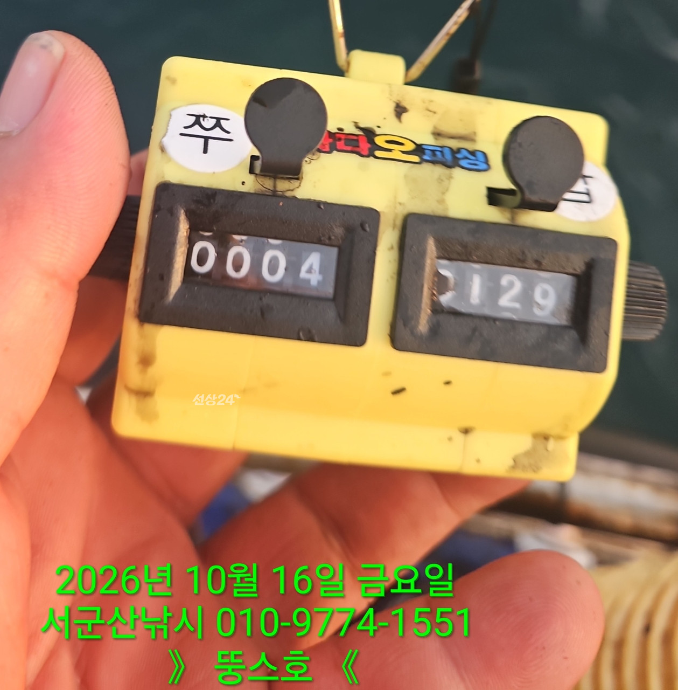
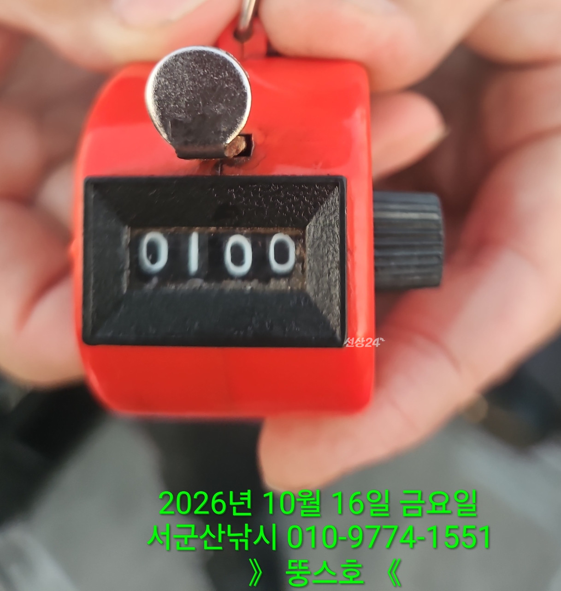
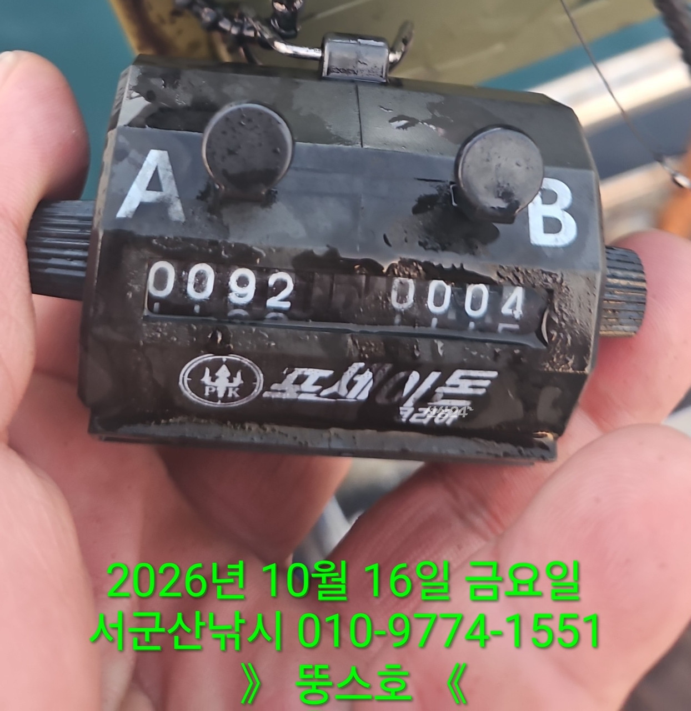
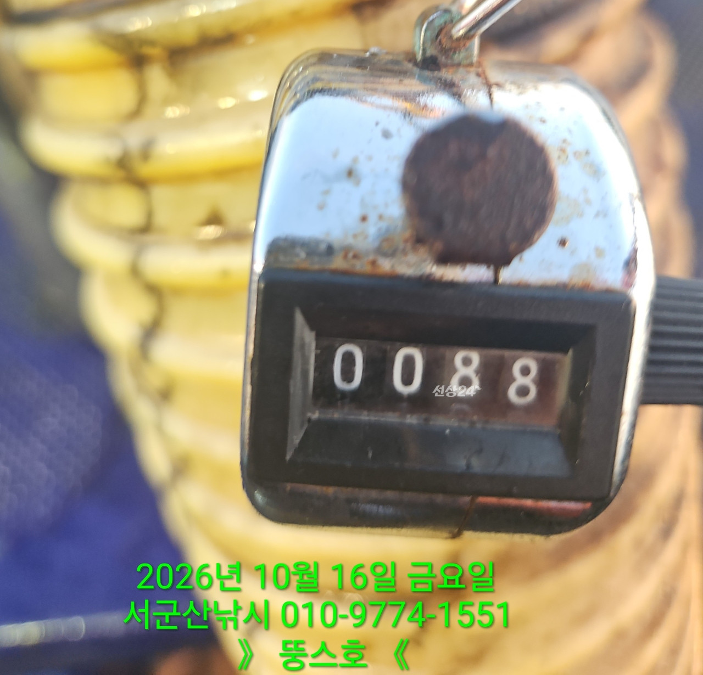
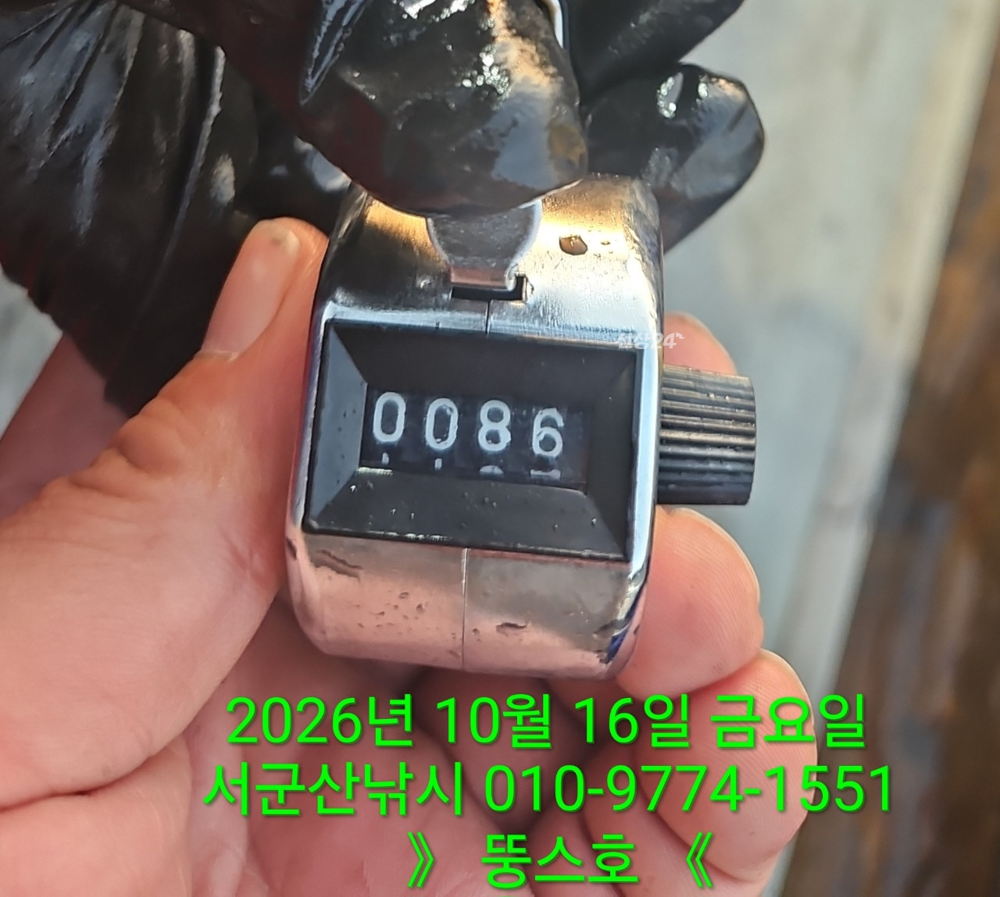
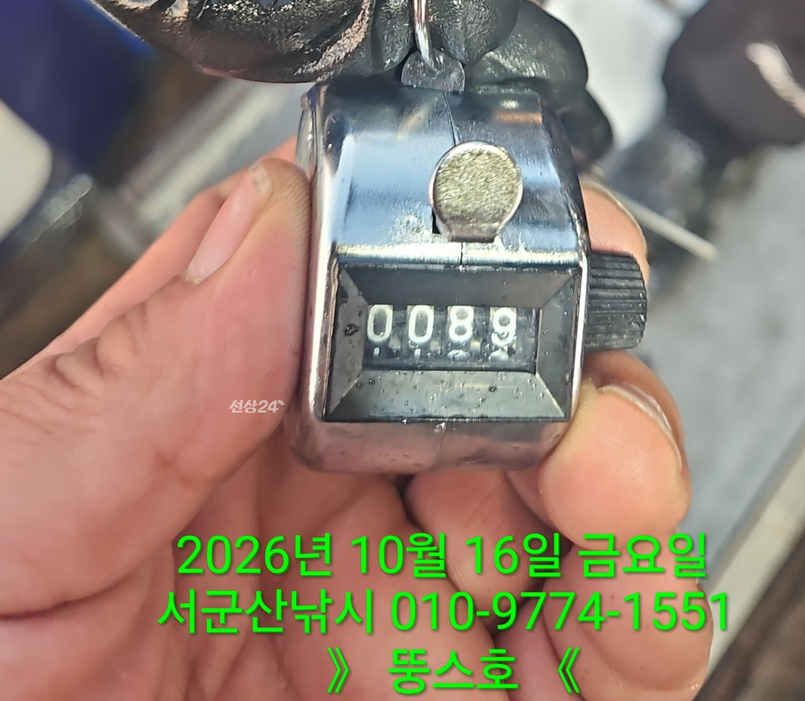
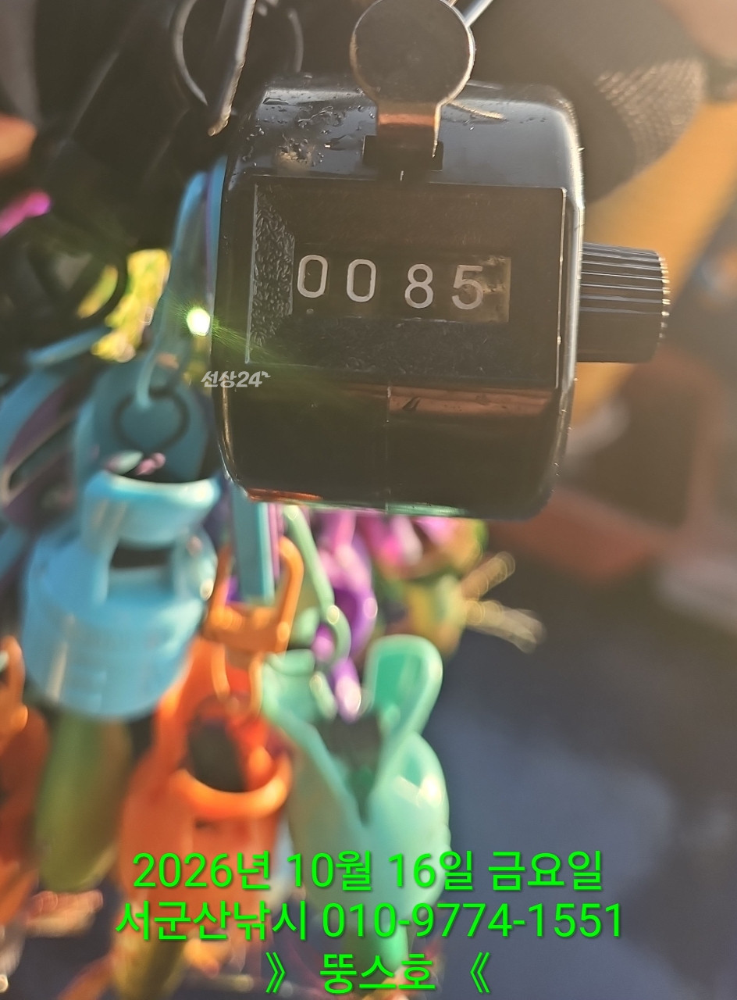
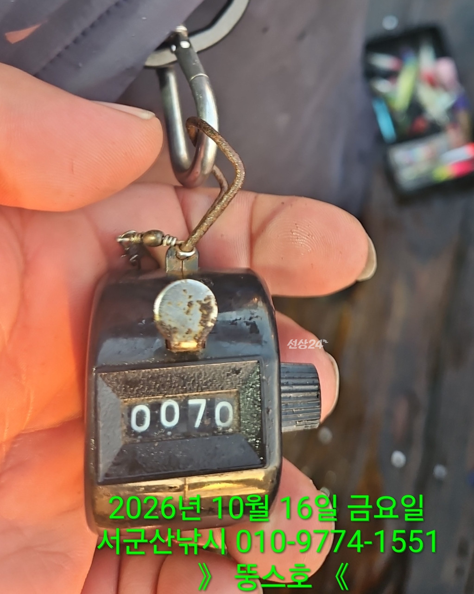
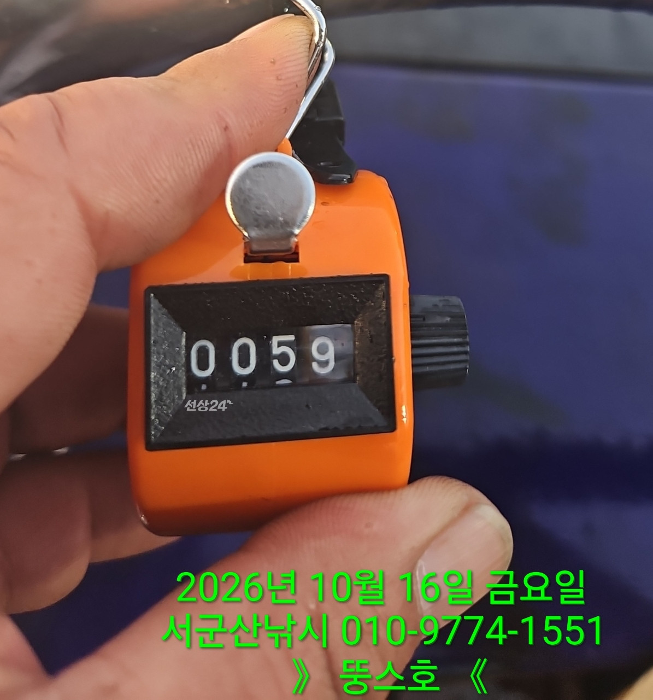
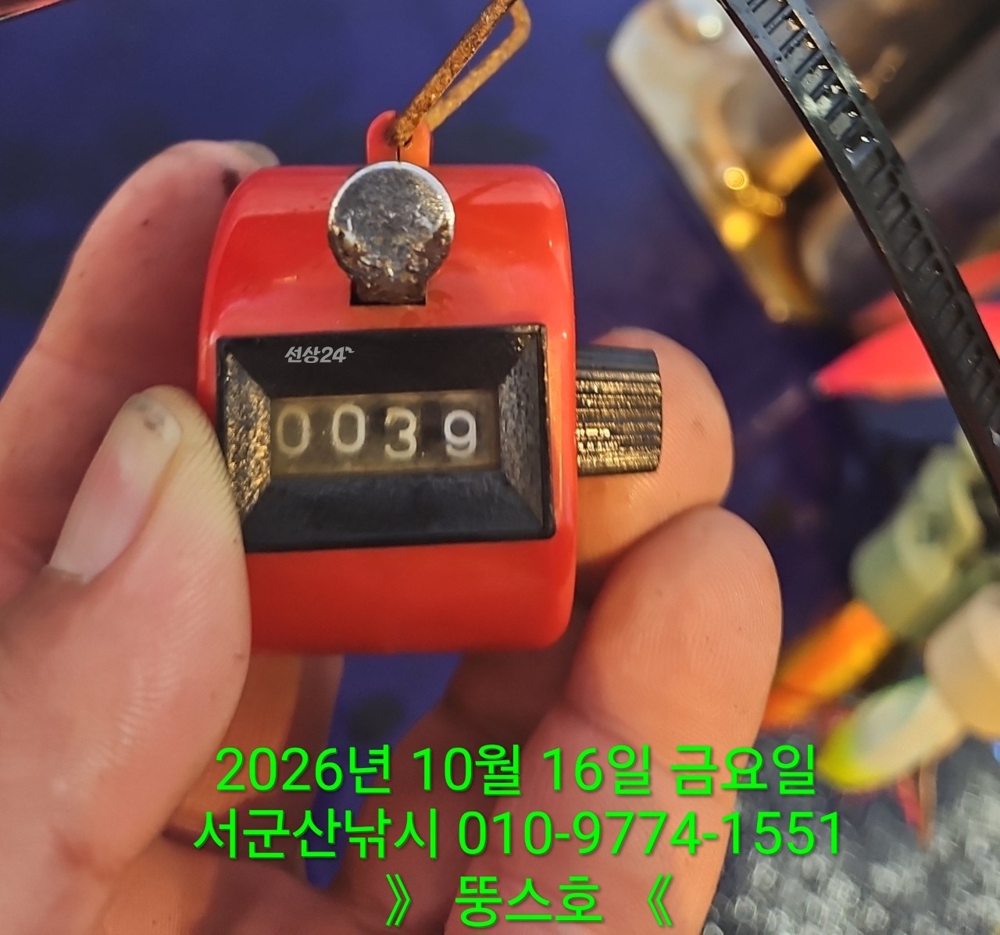

2026-10-17 · 군산 뚱스호
조황정보 HOME / 조황정보 / 조황상세
10/16 [군산 뚱스호]_갑오징어 종일반 조황 10/16 [군산 뚱스호]_갑오징어 종일반 조황 안녕하십니까..10월 16일 갑오징어종일반 조황입니다어제는 짧게 오는 너울오늘은 넓게오는 너울덕에종일 너울너울 했고오늘 느낌은 집나간 갑이가 돌아 온듯한느낌이 들정도로 활성도가 좋았으며감각좋으신 70대 어르신께서 89수라는놀라운 마릿수를 하시며 상위권에 드시기도하고누군가는 했던 혹은 해보고 싶은 백갑..막판에 보니 97수 하신분이 계셔서그려 포인트이동 좀 늦게까지 해서백갑 채워드리고 철수 하였습니다 오늘오신 조사님들 고생 많으셨습니다 ■ 예약문의 : 063-466-6565 010-9774-1551■ 오시는길 : 전라북도 군산시 새만금북로277(오식도동 1002)■ 서군산낚시 실시간 예약 바로가기 : http://seo.sunsang24.com/■ 서군산낚시 밴드 바로가기 : https://band.us/band/78646704 서군산낚시 (서해안/비응항) 1.7km 갑오징어 2026. 10. 17 | 조회 409 서군산낚시 (서해안/비응항) 2026. 10. 17 | 조회 409









